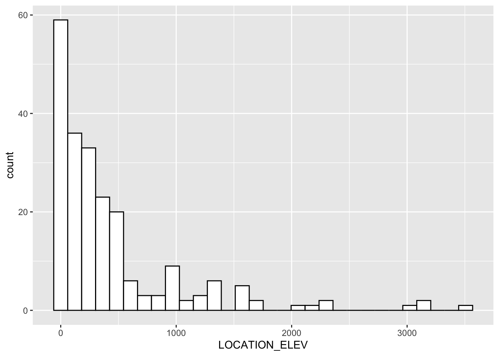
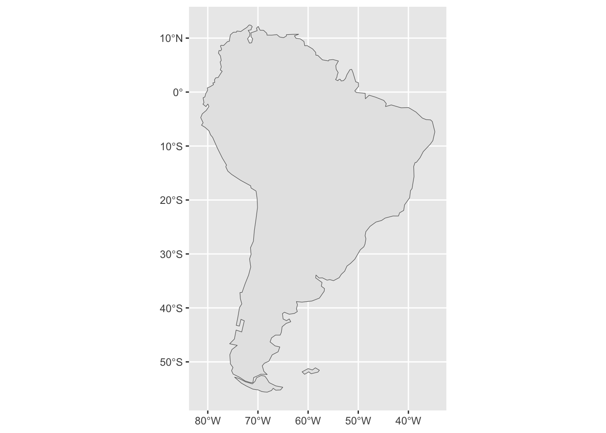
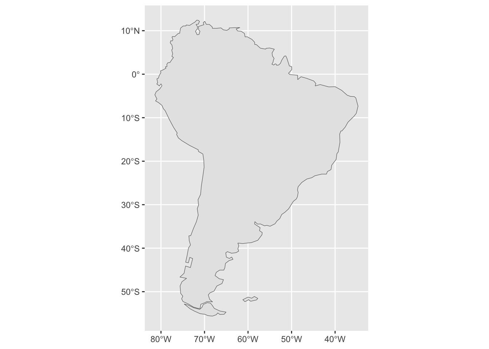

install.packages('sf')
install.packages('devtools')
devtools::install_github("mikejohnson51/AOI", force = TRUE)
devtools::install_github("valentinitnelav/plotbiomes")Introduction to Simple Features in R
Install libraries for this workshop
Load the required libraries for this workshop
library(sf)
library(AOI)
library(tidyverse)
library(ggplot2)Goals
The goals of this workshop are to: 1. Become familiar with simple features 2. Master simple feature manipulation 3. Visualize simple features
Data
Import FluxNet_Sites_2024.csv. This table was created from the FLUXNET site list found at https://fluxnet.org/sites/site-list-and-pages/?view=table.
FluxNet <- read.csv('data/FluxNet_Sites_2024.csv')This dataset includes:
| Column Name | Description |
|---|---|
| SITE_ID | Unique site id |
| SITE_NAME | Site name |
| FLUXNET2015 | License information for the data for the two FLUXNET Products |
| FLUXNET-CH4 | License information for the data for the two FLUXNET Products |
| LOCATION_LAT | Location information |
| LOCATION_LONG | Location information |
| LOCATION_ELEV | Elevation in meters |
| IGBP | Vegetation type |
| MAT | Mean annual temperature in Celsius |
| MAP | Mean annual precipitation in mm |
Take a look at the file:
View(FluxNet) Look at the tower site locations:
FluxNet %>% ggplot( ) + geom_point( aes( x=LOCATION_LONG , y=LOCATION_LAT))Warning: Removed 1 row containing missing values or values outside the scale range
(`geom_point()`).Look at the elevation, mean annual temperature, and mean annual precipitation for the tower site locations:
FluxNet %>% ggplot( aes(x=LOCATION_ELEV)) +
geom_histogram(color="black", fill="white")`stat_bin()` using `bins = 30`. Pick better value with `binwidth`.Warning: Removed 50 rows containing non-finite outside the scale range
(`stat_bin()`).
FluxNet %>% ggplot( aes(x=MAT)) +
geom_histogram(color="black", fill="white")`stat_bin()` using `bins = 30`. Pick better value with `binwidth`.Warning: Removed 59 rows containing non-finite outside the scale range
(`stat_bin()`).FluxNet %>% ggplot( aes(x=MAP)) +
geom_histogram(color="black", fill="white")`stat_bin()` using `bins = 30`. Pick better value with `binwidth`.Warning: Removed 60 rows containing non-finite outside the scale range
(`stat_bin()`).We are interested in exploring the sites with methane data. Lets subset by FLUXNET-CH4.
FLUXNET.CH4 <- FluxNet %>% filter( FLUXNET.CH4 != "")View(FLUXNET.CH4 )This object is currently a dataframe.
class(FLUXNET.CH4)[1] "data.frame"Lets make it a simple feature using st_as_sf().
FLUXNET.CH4.shp <- st_as_sf(x = FLUXNET.CH4,
coords = c("LOCATION_LONG", "LOCATION_LAT"),
crs = "+init=epsg:4326")Warning in CPL_crs_from_input(x): GDAL Message 1: +init=epsg:XXXX syntax is
deprecated. It might return a CRS with a non-EPSG compliant axis order.ggplot(data=FLUXNET.CH4.shp ) + geom_sf()check the class:
class(FLUXNET.CH4.shp)[1] "sf" "data.frame"Simple features describe how objects in the real world can be represented in computers. They have a geometry describing where on earth the feature is located, and they have attributes, which describe other properties about the feature.
Look at the information about the geometry:
FLUXNET.CH4.shp$geometryGeometry set for 81 features
Geometry type: POINT
Dimension: XY
Bounding box: xmin: -163.7002 ymin: -37.3879 xmax: 175.5539 ymax: 71.3242
Geodetic CRS: WGS 84
First 5 geometries:POINT (11.3175 47.1167)POINT (-56.412 -16.498)POINT (22.3711 -18.9647)POINT (23.1792 -19.5481)POINT (-121.2984 61.3089)If we print the first three features, we see their attribute values and an abridged version of the geometry.
print(FLUXNET.CH4.shp, n = 3)Simple feature collection with 81 features and 8 fields
Geometry type: POINT
Dimension: XY
Bounding box: xmin: -163.7002 ymin: -37.3879 xmax: 175.5539 ymax: 71.3242
Geodetic CRS: WGS 84
First 3 features:
SITE_ID SITE_NAME FLUXNET2015 FLUXNET.CH4 LOCATION_ELEV IGBP
1 AT-Neu Neustift CC-BY-4.0 CC-BY-4.0 970 GRA
2 BR-Npw Northern Pantanal Wetland CC-BY-4.0 120 WSA
3 BW-Gum Guma CC-BY-4.0 950 WET
MAT MAP geometry
1 6.5 852 POINT (11.3175 47.1167)
2 24.9 1486 POINT (-56.412 -16.498)
3 21.0 460 POINT (22.3711 -18.9647)Geometrical Operations
There are many geometrical operations that can be used to achieve simple feature manipulation.
methods(class = "sf") [1] [ [[<-
[3] [<- $<-
[5] aggregate anti_join
[7] arrange as.data.frame
[9] cbind coerce
[11] dbDataType dbWriteTable
[13] distinct dplyr_reconstruct
[15] drop_na duplicated
[17] filter full_join
[19] gather group_by
[21] group_split identify
[23] initialize inner_join
[25] left_join merge
[27] mutate nest
[29] pivot_longer pivot_wider
[31] plot points
[33] print rbind
[35] rename_with rename
[37] right_join rowwise
[39] sample_frac sample_n
[41] select semi_join
[43] separate_rows separate
[45] show slice
[47] slotsFromS3 spread
[49] st_agr st_agr<-
[51] st_area st_as_s2
[53] st_as_sf st_as_sfc
[55] st_bbox st_boundary
[57] st_break_antimeridian st_buffer
[59] st_cast st_centroid
[61] st_collection_extract st_concave_hull
[63] st_convex_hull st_coordinates
[65] st_crop st_crs
[67] st_crs<- st_difference
[69] st_drop_geometry st_exterior_ring
[71] st_filter st_geometry
[73] st_geometry<- st_inscribed_circle
[75] st_interpolate_aw st_intersection
[77] st_intersects st_is_full
[79] st_is_valid st_is
[81] st_join st_line_merge
[83] st_m_range st_make_valid
[85] st_minimum_rotated_rectangle st_nearest_points
[87] st_node st_normalize
[89] st_point_on_surface st_polygonize
[91] st_precision st_reverse
[93] st_sample st_segmentize
[95] st_set_precision st_shift_longitude
[97] st_simplify st_snap
[99] st_sym_difference st_transform
[101] st_triangulate_constrained st_triangulate
[103] st_union st_voronoi
[105] st_wrap_dateline st_write
[107] st_z_range st_zm
[109] summarise text
[111] transform transmute
[113] ungroup unite
[115] unnest
see '?methods' for accessing help and source codeBelow we will explore a few methods:
st_is_valid() and st_is_simple() return a boolean indicating whether a geometry is valid or simple.
st_is_valid(FLUXNET.CH4.shp) [1] TRUE TRUE TRUE TRUE TRUE TRUE TRUE TRUE TRUE TRUE TRUE TRUE TRUE TRUE TRUE
[16] TRUE TRUE TRUE TRUE TRUE TRUE TRUE TRUE TRUE TRUE TRUE TRUE TRUE TRUE TRUE
[31] TRUE TRUE TRUE TRUE TRUE TRUE TRUE TRUE TRUE TRUE TRUE TRUE TRUE TRUE TRUE
[46] TRUE TRUE TRUE TRUE TRUE TRUE TRUE TRUE TRUE TRUE TRUE TRUE TRUE TRUE TRUE
[61] TRUE TRUE TRUE TRUE TRUE TRUE TRUE TRUE TRUE TRUE TRUE TRUE TRUE TRUE TRUE
[76] TRUE TRUE TRUE TRUE TRUE TRUEIf there were any issues with the geometery you can use st_make_valid() to fix. Since this is a point file there will be no issues with the geometry.
Change the CRS to a projected EPGS with st_transform.
Coordinate reference systems (CRS) are like measurement units for coordinates: they specify which location on Earth a particular coordinate pair refers to. Simple feature have two attributes to store a CRS: epsg and proj4string. This implies that all geometries in a geometry list-column must have the same CRS. Both may be NA, e.g. in case the CRS is unknown, or when we work with local coordinate systems (e.g. inside a building, a body, or an abstract space).
proj4string is a generic, string-based description of a CRS, understood by the PROJ library. It defines projection types and (often) defines parameter values for particular projections, and hence can cover an infinite amount of different projections. This library (also used by GDAL) provides functions to convert or transform between different CRS. epsg is the integer ID for a particular, known CRS that can be resolved into a proj4string. Some proj4string values can be resolved back into their corresponding epsg ID, but this does not always work.
The importance of having epsg values stored with data besides proj4string values is that the epsg refers to particular, well-known CRS, whose parameters may change (improve) over time; fixing only the proj4string may remove the possibility to benefit from such improvements, and limit some of the provenance of datasets, but may help reproducibility. Coordinate reference system transformations can be carried out using st_transform
FLUXNET.CH4.shp = st_transform(FLUXNET.CH4.shp, '+init=epsg:4087')
FLUXNET.CH4.shpSimple feature collection with 81 features and 8 fields
Geometry type: POINT
Dimension: XY
Bounding box: xmin: -18223020 ymin: -4162002 xmax: 19542570 ymax: 7939774
Projected CRS: WGS 84 / World Equidistant Cylindrical
First 10 features:
SITE_ID SITE_NAME FLUXNET2015 FLUXNET.CH4 LOCATION_ELEV IGBP
1 AT-Neu Neustift CC-BY-4.0 CC-BY-4.0 970 GRA
2 BR-Npw Northern Pantanal Wetland CC-BY-4.0 120 WSA
3 BW-Gum Guma CC-BY-4.0 950 WET
4 BW-Nxr Nxaraga CC-BY-4.0 950 GRA
5 CA-SCB Scotty Creek Bog CC-BY-4.0 280 WET
6 CA-SCC Scotty Creek Landscape CC-BY-4.0 285 ENF
7 CH-Cha Chamau CC-BY-4.0 CC-BY-4.0 393 GRA
8 CH-Dav Davos CC-BY-4.0 CC-BY-4.0 1639 ENF
9 CH-Oe2 Oensingen crop CC-BY-4.0 CC-BY-4.0 452 CRO
10 CN-Hgu Hongyuan CC-BY-4.0 3500 GRA
MAT MAP geometry
1 6.5 852.0 POINT (1259858 5245007)
2 24.9 1486.0 POINT (-6279755 -1836549)
3 21.0 460.0 POINT (2490339 -2111141)
4 21.0 460.0 POINT (2580297 -2176085)
5 -2.8 388.0 POINT (-13502876 6824876)
6 -2.8 387.6 POINT (-13502965 6824764)
7 9.5 1136.0 POINT (936241.4 5255415)
8 2.8 1062.0 POINT (1097154 5211455)
9 9.8 1155.0 POINT (860911.5 5263898)
10 1.5 747.0 POINT (11420267 3656322)Now the Projected CRS is WGS 84 / World Equidistant Cylindrical.
st_distance() returns a dense numeric matrix with distances between geometries:
FLUXNET.CH4.shp$MeanDistance_km <- st_distance(FLUXNET.CH4.shp, FLUXNET.CH4.shp) %>% rowMeans()/1000
FLUXNET.CH4.shp %>% ggplot() + geom_sf(aes(col = MeanDistance_km ))FLUXNET.CH4.shp %>% ggplot( aes(x=MeanDistance_km)) +
geom_histogram(color="black", fill="white")`stat_bin()` using `bins = 30`. Pick better value with `binwidth`.The package AOI
The AOI package in R stands for Area of Interest. It is primarily used for geographic or spatial data analysis, particularly in defining, visualizing, and working with specific regions or “areas of interest” on maps. The package facilitates interaction with various geographic data sources, allowing users to work with location-based data in a flexible and intuitive way.
Key Feature of the AOI Package:
Define Areas of Interest (AOIs): Users can define specific geographic regions of interest using coordinates, addresses, or administrative boundaries (e.g., cities, countries).
Key Function of the AOI Package:
aoi_get(): Defines an Area of Interest based on a variety of inputs such as bounding box coordinates, administrative boundaries, or addresses.
Example:
library(AOI)
# Define an area of interest by coordinates
# aoi.NY.bb <- aoi_get("New York")
aoi.NY <- aoi_get(state="New York")
# aoi.NY.bb %>% ggplot() + geom_sf()
aoi.NY %>% ggplot() + geom_sf()Creates a simple feature of South America:
s.america <- aoi_get(country= "South America", union=T)
s.america %>% ggplot() + geom_sf()
What is union =T doing?
# Explore what happens when union = F here
# ...Re-project the s.america to match Fluxnet.ch4:
aoi.SAmerica <- st_transform( s.america , '+init=epsg:4087')
aoi.SAmerica %>% ggplot() + geom_sf()
Create a simple feature of Brazil and re-project it to match Fluxnet.ch4:
# Create your simple feature object here
# ...The functions st_intersects(), st_disjoint(), st_touches(), st_crosses(), st_within(), st_contains(), st_overlaps(), st_equals(), st_covers(), st_covered_by(), st_equals_exact() and st_is_within_distance() all return a sparse matrix with matching (TRUE) indexes, or a full logical matrix:
How many towers are in South America?
st_intersects(aoi.SAmerica, FLUXNET.CH4.shp)Sparse geometry binary predicate list of length 1, where the predicate
was `intersects'
1: 2st_intersects(aoi.SAmerica, FLUXNET.CH4.shp, sparse = FALSE) [,1] [,2] [,3] [,4] [,5] [,6] [,7] [,8] [,9] [,10] [,11] [,12]
[1,] FALSE TRUE FALSE FALSE FALSE FALSE FALSE FALSE FALSE FALSE FALSE FALSE
[,13] [,14] [,15] [,16] [,17] [,18] [,19] [,20] [,21] [,22] [,23] [,24]
[1,] FALSE FALSE FALSE FALSE FALSE FALSE FALSE FALSE FALSE FALSE FALSE FALSE
[,25] [,26] [,27] [,28] [,29] [,30] [,31] [,32] [,33] [,34] [,35] [,36]
[1,] FALSE FALSE FALSE FALSE FALSE FALSE FALSE FALSE FALSE FALSE FALSE FALSE
[,37] [,38] [,39] [,40] [,41] [,42] [,43] [,44] [,45] [,46] [,47] [,48]
[1,] FALSE FALSE FALSE FALSE FALSE FALSE FALSE FALSE FALSE FALSE FALSE FALSE
[,49] [,50] [,51] [,52] [,53] [,54] [,55] [,56] [,57] [,58] [,59] [,60]
[1,] FALSE FALSE FALSE FALSE FALSE FALSE FALSE FALSE FALSE FALSE FALSE FALSE
[,61] [,62] [,63] [,64] [,65] [,66] [,67] [,68] [,69] [,70] [,71] [,72]
[1,] FALSE FALSE FALSE FALSE FALSE FALSE FALSE FALSE FALSE FALSE FALSE FALSE
[,73] [,74] [,75] [,76] [,77] [,78] [,79] [,80] [,81]
[1,] FALSE FALSE FALSE FALSE FALSE FALSE FALSE FALSE FALSEHow many towers are in Brazil?
# Find out how many towers are in Brazil here
# ...Where possible geometric operations such as st_distance(), st_length() and st_area() report results with a units attribute appropriate for the CRS.
Calculate the area of South America:
aoi.SAmerica$Area <- st_area(aoi.SAmerica )
aoi.SAmerica$Area1.918234e+13 [m^2]Calculate the area of Brazil:
# Calculate the area here
# ...Visualize the global distribution of towers:
First create a simple feature for all large terrestrial regions in Europe, Asia, the Americas, Africa, Australia and New Zealand:
aoi.terrestrial <- aoi_get(country= c("Europe","Asia" ,"North America", "South America", "Australia","Africa", "New Zealand"))
aoi.terrestrial %>% ggplot() + geom_sf()
Look at the CRS:
aoi.terrestrialSimple feature collection with 171 features and 1 field
Geometry type: MULTIPOLYGON
Dimension: XY
Bounding box: xmin: -180 ymin: -55.61183 xmax: 180 ymax: 83.64513
Geodetic CRS: WGS 84
First 10 features:
name geometry
2 Tanzania MULTIPOLYGON (((33.90371 -0...
3 W. Sahara MULTIPOLYGON (((-8.66559 27...
4 Canada MULTIPOLYGON (((-122.84 49,...
5 United States of America MULTIPOLYGON (((-122.84 49,...
6 Kazakhstan MULTIPOLYGON (((87.35997 49...
7 Uzbekistan MULTIPOLYGON (((55.96819 41...
9 Indonesia MULTIPOLYGON (((141.0002 -2...
10 Argentina MULTIPOLYGON (((-68.63401 -...
11 Chile MULTIPOLYGON (((-68.63401 -...
12 Dem. Rep. Congo MULTIPOLYGON (((29.34 -4.49...Re-project the polygon to match FLUXNET.CH4.shp:
aoi.terrestrial <- aoi_get(country= c("Europe","Asia" ,"North America", "South America", "Australia","Africa", "New Zealand")) %>% st_transform( 4087 )
aoi.terrestrialSimple feature collection with 171 features and 1 field
Geometry type: MULTIPOLYGON
Dimension: XY
Bounding box: xmin: -20037510 ymin: -6190681 xmax: 20037510 ymax: 9311333
Projected CRS: WGS 84 / World Equidistant Cylindrical
First 10 features:
name geometry
2 Tanzania MULTIPOLYGON (((3774144 -10...
3 W. Sahara MULTIPOLYGON (((-964649 307...
4 Canada MULTIPOLYGON (((-13674486 5...
5 United States of America MULTIPOLYGON (((-13674486 5...
6 Kazakhstan MULTIPOLYGON (((9724867 547...
7 Uzbekistan MULTIPOLYGON (((6230351 459...
9 Indonesia MULTIPOLYGON (((15696072 -2...
10 Argentina MULTIPOLYGON (((-7640303 -5...
11 Chile MULTIPOLYGON (((-7640303 -5...
12 Dem. Rep. Congo MULTIPOLYGON (((3266114 -50...Visualize the shapefile you created:
aoi.terrestrial %>% ggplot() + geom_sf()Use ggplot to visualize the global distribution of Fluxnet CH4 sites:
ggplot() + geom_sf(data = aoi.terrestrial) + geom_sf(data = FLUXNET.CH4.shp) Extract the country from the world simple feature into FLUXNET.CH4.shp:
FLUXNET.CH4.shp$Country <- st_intersection( aoi.terrestrial, FLUXNET.CH4.shp)$nameWarning: attribute variables are assumed to be spatially constant throughout
all geometriesExplore the Fluxnet CH4 sites:
names(FLUXNET.CH4.shp) [1] "SITE_ID" "SITE_NAME" "FLUXNET2015" "FLUXNET.CH4"
[5] "LOCATION_ELEV" "IGBP" "MAT" "MAP"
[9] "geometry" "MeanDistance_km" "Country" ggplot(data= FLUXNET.CH4.shp) + geom_point( aes(x=MAT, y=MAP))Warning: Removed 10 rows containing missing values or values outside the scale range
(`geom_point()`).ggplot(data= FLUXNET.CH4.shp) + geom_point( aes(x=MAT, y=MAP, col=IGBP))Warning: Removed 10 rows containing missing values or values outside the scale range
(`geom_point()`).FLUXNET.CH4.shp$IGBP <- as.factor( FLUXNET.CH4.shp$IGBP)
summary(FLUXNET.CH4.shp$IGBP)BSV CRO CSH EBF ENF GRA MF OSH SNO URB WAT WET WSA
2 13 1 4 7 9 1 2 1 1 2 37 1 Writing files using st_write:
When writing, you can use the following arguments to control update and delete: update=TRUE causes an existing data source to be updated, if it exists; this option is by default TRUE for all database drivers, where the database is updated by adding a table.
delete_layer=TRUE causes st_write try to open the data source and delete the layer; no errors are given if the data source is not present, or the layer does not exist in the data source.
delete_dsn=TRUE causes st_write to delete the data source when present, before writing the layer in a newly created data source. No error is given when the data source does not exist. This option should be handled with care, as it may wipe complete directories or databases.
write_sf(FLUXNET.CH4.shp, "data/products/FLUXNET_CH4.shp") It is possible to create data.frame objects with geometry list-columns that are not of class sf by:
Fluxnet.ch4.df <- as.data.frame(FLUXNET.CH4.shp)Check the class:
class(Fluxnet.ch4.df)[1] "data.frame"Such objects: no longer register which column is the geometry list-column no longer have a plot method, and lack all of the other dedicated methods listed above for class sf. To write this object:
write.csv(Fluxnet.ch4.df, "data/Fluxnet.ch4.df") Additional Reading:
S. Scheider, B. Gräler, E. Pebesma, C. Stasch, 2016. Modelling spatio-temporal information generation. Int J of Geographic Information Science, 30 (10), 1980-2008. (open access) Stasch, C., S. Scheider, E. Pebesma, W. Kuhn, 2014. Meaningful Spatial Prediction and Aggregation. Environmental Modelling & Software, 51, (149–165, open access).
Assignment:
Write a 3-page report on the distribution of tower sites discussing the strengths and weakness of the current tower representation. Please create 2 visualizations. You are welcome to use any additional data.